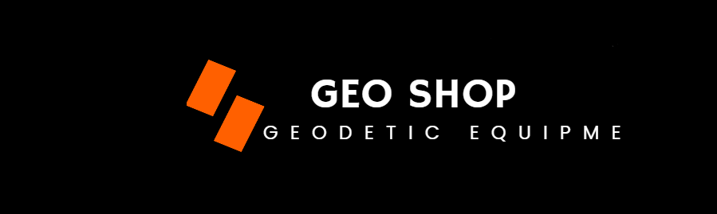

КОМПАНИЯ "GEO Shop"
Генеральный дистрибьютор TOPCON и SOKKIA в России
Продажа, техническая поддержка, обслуживание, сертификация, метрологическое обеспечение, а также внедрение комплексных технологических решений на базе высокотехнологичного оборудования Topcon и Sokkia в России и странах СНГ. Мы реализуем: электронные тахеометры, широко востребованные в строительстве, топографических съемках, землеустроительных работах; новейшие модели тахеометров, оснащенные большим удобным графическим дисплеем, сенсорной клавиатурой, работающие в безотражательном режиме съемки и с использованием лазерного луча. В широком ассортименте представлены нивелиры – оптические, лазерные и цифровые, обеспечивающие высокую производительность при минимальных затратах труда.